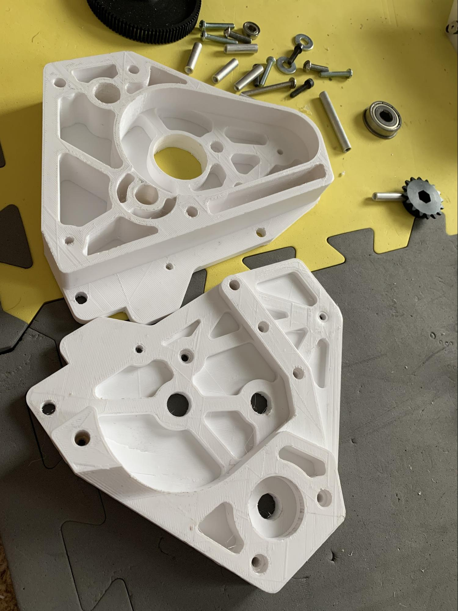
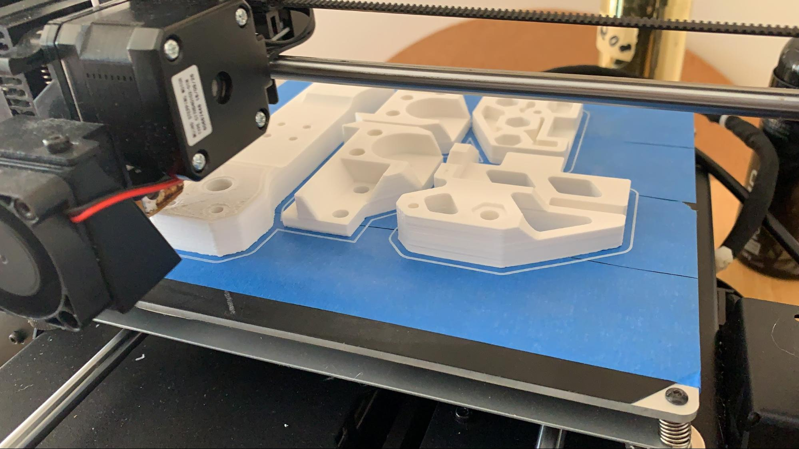
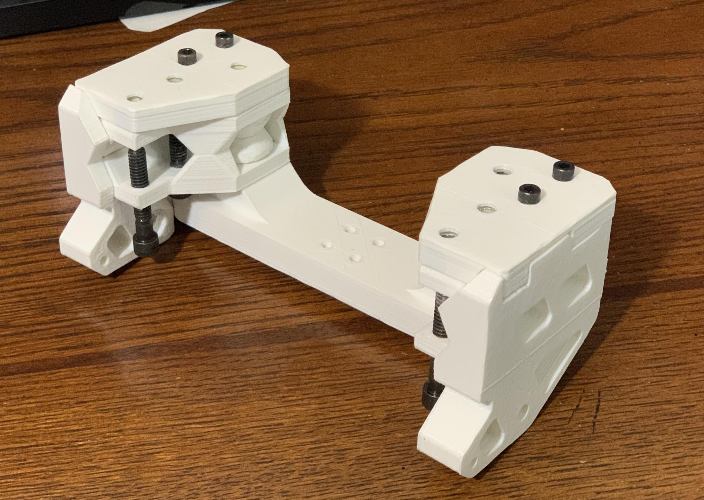

3D-печать¶
Виды 3D печати¶
Существует несколько различных видов 3D-печати. FDM (Моделирование Наплавленного Осаждения), также известная как FFF (Изготовление Плавленой Нити Накала) предполагает выдавливание расплавленного филамента для создания детали. Это наиболее распространённый тип печати, на котором мы сосредоточимся в этом руководстве. SLA (стереолитография) и SLS (селективное лазерное спекание) — это варианты 3D-печати пластиком, но они, как правило, более сложные, дорогие или имеют другие недостатки применения в FTC®. По этим причинам они не рекомендуются.
3D-печать металлом (SLS и другие) также становится все более доступной, однако не входит в рамки данного руководства.
Совет
Рекомендуем ознакомиться с разделом о 3D-печати в документации FTC <https://ftc-docs.firstinspires.org/en/latest/manufacturing/3d_printing/index.html>_ — руководством по FDM 3D-печати в рамках FTC. В нём рассматриваются такие темы, как: адгезия к столу, допуски, моделирование под 3D-печать, калибровка и выбор оборудования.
Преимущества 3D-печати¶
3D-печать позволяет создавать детали нестандартных размеров и добиваться идеальной оптимизации. Например, команды могут напечатать бобину строго определённого диаметра для максимальной скорости или шкив для ременной передачи с заданным количеством зубьев.
3D-печать позволяет командам легко комбинировать готовые наборы и отдельные детали, поскольку не все комплекты имеют регулируемые крепления или кронштейны. Хорошим примером служат переходные втулки для механических колес Nexus mecanum , которые команды печатают на 3D-принтерах.
3D-печать позволяет изготавливать детали, которые в противном случае было бы невозможно сделать из таких материалов, как алюминий, из-за ограничений в механической обработке.
3D-печать позволяет командам создавать кастомную защиту проводов и соединений от механических нагрузок. Это отличный проект, который определённо стоит вашего времени.
Недостатки 3D-печати¶
** Если на соревнованиях у вас закончились запасные части, напечатанные на 3D-принтере, скорее всего, вам не повезло. Командам рекомендуется распечатать как минимум по одному комплекту каждой детали, напечатанной на 3D-принтере, в качестве запасных частей для соревнований **.
3D-печатные компоненты обычно слабее других материалов, таких как алюминий. Однако печать в правильной ориентации может быть очень прочной - команды напечатали 3D-крюки и другие детали для поддержки робота FRC® (120 фунтов) и роботов FTC (40 фунтов).
Детали, напечатанные на 3D-принтере, должны быть нагружены только в одной ориентации. То есть, если робот подвешен на крюке, нагрузка должна приходиться только на нижнюю часть изогнутого крюка. Старайтесь по возможности исключить боковые нагрузки, чтобы избежать поломки детали.
Размер деталей, напечатанных на 3D-принтере, ограничен размером вашего стола для печати.
Печать крупных и массивных деталей может занять много времени (например, всю ночь) и сопряжена с высоким риском неудачи.
3D-печать может оказаться довольно дорогостоящей, хотя филамент можно найти по разумной цене у онлайн-продавцов, таких как Amazon.
Обычные Филаменты¶
Практически для любой детали, которую необходимо напечатать для FTC, PLA (или PLA+, Pro и т.д.) и/или PETG удовлетворят все требования по прочности, долговечности и внешнего вида. Эти два типа филамента являются безусловно самыми простыми в печати и продаются многими производителями по разумным ценам. Большинство других материалов предлагают весьма специфические преимущества (как, например, TPU), которые достигаются ценой дополнительных усилий, времени и денег.
Опасно
Если нагревательный элемент вашего принтера (часть, в которой расплавляется филамент) имеет подкладку из ПТФЭ (Тефлон), где трубка из ПТФЭ проходит до самого термоблока (часто используется в недорогих принтерах, таких как Ender 3 и его модификациях), то вам не следует печатать при или выше температуры 250 градусов Цельсия. Это приведет к разрушению и расплавлению трубки из ПТФЭ, что приведет к выделению токсичных паров. Если вам нужно печатать при таких температурах и у вас есть нагревательный элемент с покрытием из ПТФЭ, вы можете перейти на цельнометаллический нагревательный элемент.
PLA (Полимолочная Кислота)¶
Наиболее распространенным филаментом для 3D-печати является полимолочная кислота, или PLA. Это пластик, изготовленный из биологических материалов, таких как кукурузный крахмал и сахарный тростник. PLA является жестким, но более хрупким, чем другие виды филаментов, и при печати практически не деформируется. PLA хорошо подходит для большинства деталей робота, но может плохо выдерживать ударные нагрузки (удары по деталям), и поэтому такие детали должны быть смоделированы соответствующим образом.
Температура в хотенде для PLA варьируется от 190°-230° C
Температура стола для PLA варьируется в пределах 20°-60° C, но подогрев стола не является обязательным условием для PLA.
Совет
Из-за относительно низкой температуры плавления PLA не рекомендуется оставлять детали из этого материала в таких местах, как закрытый автомобиль на жаре, так как это может вызвать сильную деформацию деталей.
Существует множество разновидностей PLA, продаваемых разными производителями, например, PLA+ или PLA Pro. В состав этих филаментов входят различные добавки, улучшающие прочность, пригодность для печати и другие свойства. Хотя эти продукты стоят дороже, они могут значительно улучшить характеристики PLA и скрыть его недостатки.
PETG (полиэтилентерефталатгликоль)¶
PETG можно охарактеризовать как усиленную версию PLA. Печатать им не сложно, но он часто дает заметно большее образование нитей и другие мелкие дефекты. Хотя предел прочности при растяжении у PETG технически ниже, чем у PLA, он гораздо менее хрупкий и лучше выдерживает удары за счет небольшого изгиба. Это отличный вариант для деталей FTC, которые должны быть ударопрочными, в тех случаях, когда PLA не справляется. Более высокая термостойкость PETG также означает, что он не деформируется при высоких температурах окружающей среды, например, в раскаленной машине.
Предупреждение
PETG известен очень сильной адгезией к поверхности стола для печати, особенно к стеклу и PEI, и может вырывать куски материала из рабочей поверхности. Перед печатью рекомендуется нанести слой клея-карандаша или лака для волос.
Температурный диапазон хотенда PETG составляет 230°-260° C.
Температура стола для PETG варьируется от 60°-80° C
Менее Распространенные Филаменты¶
Данные типы филаментов используются реже, чем упомянутые выше, но также могут найти множество применений в FTC роботах. Обычно их выбирают из-за специфических свойств, таких как гибкость или повышенная прочность. Однако их печать часто сопряжена со значительными трудностями: некоторые принтеры не могут работать с ними без дополнительной настройки, а стоимость таких материалов может быть существенно выше.
ABS (Акрилонитрилбутадиенстирол)¶
ABS раньше был стандартным материалом для печати до появления PLA в коммерческом доступе. Вы наверняка сталкивались с ABS в деталях LEGO®. Этот материал выдерживает высокие нагрузки и обладает хорошей пластичностью. Однако за это приходится расплачиваться сложностью печати: часто требуется термокамера для поддержания температуры окружающей среды и предотвращения сильной деформации деталей. Поскольку аналогичное улучшение прочности по сравнению с PLA проще достичь с помощью PETG, ABS не так распространён в FTC. Тем не менее, ABS вполне доступен по цене и продаётся по тем же ценам, что и PLA..
Температурный диапазон хотенда ABS составляет 230°-250° C
Температура стола ABS варьируется в пределах 100°-120° C
Для предотвращения деформации настоятельно рекомендуется использовать термокамеру.
Из-за сложностей печати ABS и его ограничений стоит рассмотреть альтернативы, такие как ASA, которые обладают схожими свойствами, но значительно лучшей технологичностью.
TPU/TPE (Термопластичный полиуретан/Термопластичный эластомер)¶
TPU и TPE — это распространенные типы филаментов, широко используемые благодаря своей гибкости. Они позволяют создавать детали, которые могут легко сгибаться и деформироваться. Эти материалы продаются с разными показателями дюрометра (мера твёрдости/гибкости материала по шкале Шора). Высокая ударная вязкость и отличная адгезия слоев делают TPU/TPE не только универсальным, но и исключительно прочным материалом. В FTC команды используют TPU/TPE для таких элементов, как напечатанные элементы для активного захвата вместо трубок, а также для изготовления несиловых приводных ремней.
Совет
Из-за гибкой природы этих материалов принтерам с экструдером типа Bowden, где привод вынесен отдельно от хотенда, печатать TPU/TPE крайне сложно.
Температура хотенда TPU/TPE варьируется от 210°-250° C
Для печати TPU/TPE обычно не требуется подогреваемый стол, но если он используется, температура не должна превышать 60 °C — это может привести к спеканию материала с поверхностью стола.
TPU/TPE обладают высокой гигроскопичностью и активно поглощают влагу из воздуха, поэтому обычно требуют просушки перед печатью, а иногда и в процессе печати.
Настоятельно рекомендуется использовать экструдер с прямой подачей
Специализированные Виды Филаментов¶
В FTC эти материалы практически не находят применения. Несмотря на превосходные механические свойства, позволяющие деталям выдерживать экстремальные нагрузки и воздействие неблагоприятных условий окружающей среды, их использование сопряжено с существенными трудностями. Все эти филаменты значительно дороже упомянутых выше аналогов, при этом создают множество проблем при печати.
Нейлон¶
Нейлоновые филаменты могут быть стеклонаполненными, углеволоконными или чистыми. Нейлон считается лидером по ударопрочности во многих ситуациях, где деталь может упруго деформироваться, а не ломаться полностью. Его часто используют для таких деталей, как крышки колес в колесной базе и в местах, где он может подвергаться многократным ударам и повреждениям. Для печати нейлоном требуются очень высокие температуры, обычно необходима термокамера, а материал обязательно нужно просушивать перед печатью (и во время нее).
Температура нагрева нейлона варьируется от 240°-260° C
Температура стола для нейлона варьируется от 55°-80° C
Нейлон печально известен тем, что впитывает влагу из воздуха, и его следует тщательно высушивать до и во время печати. Несоблюдение этого требования, вероятно, приведет к тому, что деталь будет практически непригодна для использования.
Рекомендуется использование термокамеры
Наполненный углеродным волокном¶
Многие филаменты также выпускаются с добавлением частиц углеродного волокна, которые вводятся в состав самого материала. Хотя их часто считают средством радикального повышения прочности, на самом деле такие филаменты предназначены в первую очередь для увеличения жёсткости и улучшения технологичности печати материалов наподобие нейлона. Углеволоконные филаменты, как правило, требуют более высоких температур и сопла из закалённой стали, но если ваш принтер справляется с чистыми версиями этих материалов, то и с их углеволоконными аналогами проблем возникнуть не должно.
Поликарбонат (PC)¶
Поликарбонат и его разновидности — это исключительно прочные технические материалы. Главное преимущество PC заключается в его высокой прочности и возможности превосходно выдерживать ударные нагрузки. Однако для работы с ним требуются тщательная сушка, принтер, способный работать при очень высоких температурах, и термокамера. Это чрезвычайно сложный в печати материал, к тому же обычно весьма дорогой. В FTC практически нет причин использовать детали из поликарбоната, поскольку ни одна из задач соревнований не требует его прочностных характеристик.
Существует несколько смесей на основе поликарбоната, которые печатать значительно проще. Яркий пример — материал PolyMax PC от PolyMaker. Это более простой в печати PC-материал с пониженной температурой обработки, сохраняющий большинство преимуществ чистого поликарбоната. Модель PolyLite обладает не столь высокой ударной вязкостью, но существенно дешевле. Оба варианта печатать намного проще, чем чистый поликарбонат.
Температура хотенда PC варьируется от 250°-320° C
Температура стола для PC варьируется от 80°-140° C
Обязательно использование термокамеры
Обязательная сушка филамента
Высококлассные специализированные филаменты¶
Существуют и другие материалы, которые могут обеспечивать высококлассные преимущества и расширять границы возможностей 3D-печати, но их не стоит использовать, если вы не очень уверены в своих навыках печати. В FTC они практически не находят применения. К таким материалам относятся, но не ограничиваются: Delrin (полиоксиметилен, гомополимер ацеталя), PEI (полиэфиримид, коммерческое название ULTEM), PEEK (полиэфирэфиркетон) и PEKK (полиэфиркетонкетон). Эти материалы чрезвычайно сложны в печати, требуют невероятно высоких температур (некоторые - до такой степени, что начинает плавиться даже закалённое стальное сопло) и стоят очень дорого.
Руководство По Проектированию Для 3D-печати¶
Вот краткое руководство по проектированию деталей для 3D-печати, которое, как мы надеемся, поможет командам, только начинающим работать с 3D-моделированием.
Первое, что следует учитывать при проектировании деталей для 3D-печати — это ориентация модели на столе. Она определяется той стороной, которая контактирует с поверхностью стола для печати. В идеале деталь должна иметь плоское основание для максимальной площади контакта со столом, что обеспечивает лучшее сцепление.
Совет
Максимальная площадь контакта с столом для печати обеспечивает лучшее сцепление, предотвращая отслаивание и деформацию детали во время печати, что в итоге повышает общее качество результата.
Если деталь не имеет плоской поверхности для печати, простое решение — разделить её на несколько частей по столу. Например, приведенная ниже пластина редуктора не имела плоской стороны для печати, поэтому была разрезана пополам. В дальнейшем части были соединены с помощью винтов и клея для пластика. Если бы эта пластина была напечатана как единое целое, потребовалось бы использование поддержек для создания всех необходимых отверстий. Избегание поддержек позволяет минимизировать расход материала.
{kind=link}
Совет
Не снимайте фаски и не закругляйте ничего по периметру первого слоя на нижней поверхности детали. Снятие фаски или закругления увеличит вероятность деформации детали, особенно на столах для печати без нагрева.
Угол Наклона¶
Угол наклона— это угол между боковой поверхностью детали и нормалью к столу печати. Максимальный угол наклона - это максимальный угол, под которым принтер может печатать без использования поддержек, и зависит от конкретного принтера, настроек печати (особенно скорости, температуры и охлаждения) и типа филамента. Для минимизации поддержек проверяйте все углы наклона в модели и убедитесь, что их угол не превышает максимально допустимого. Соблюдение этого предела также снижает риск деформации детали.
Векторы Напряжения¶
Пожалуй, ключевым аспектом при проектировании являются векторы напряжений. 3D-печатные детали по своей природе обладают повышенной прочностью в двух осях и пониженной — в третьей. Эта «слабая ось» обусловлена самой слоистой структурой FDM-печати. Частично проблему можно решить повышением температуры печати до определенного предела, пока не начнет страдать качество, но более эффективный метод — повторное разделение детали на части. Основная идея заключается в увеличении прочности за счет оптимизации геометрии детали в плоскости её печати. Например, представленная ниже сборка отвечала за подвес всего робота и требовала максимально возможной прочности для 3D-печатной детали.
Совет
Может показаться нелогичным разбивать деталь на несколько частей для увеличения прочности, но в этом есть логика.
Данную деталь можно было бы легко напечатать цельной, но её прочность оказалась бы недостаточной при нагрузках, направленных вверх. Разделение детали и создание новых плоских поверхностей для печати позволяет усилить каждую из осей. При выходе из строя небольшого компонента робот сохранит частичную работоспособность, что предпочтительнее полного разрушения всей конструкции. В данном примере боковые элементы были напечатаны отдельно с ориентацией на перпендикулярных осях для повышения общей прочности сборки.
 {kind=link}
{kind=link}
Эта сборка является хорошим примером учета ориентации деталей, углов наклона и векторов напряжений в каждой детали конструкции. Сложные детали можно сделать прочными и без какой-либо поддержки, просто правильно разделив их.